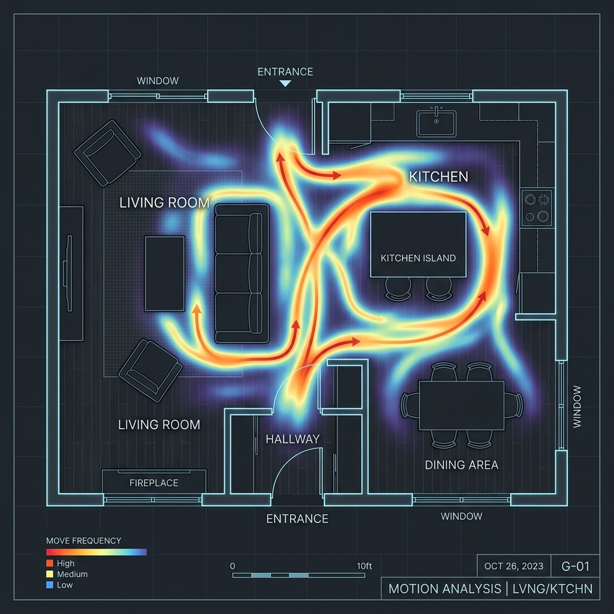
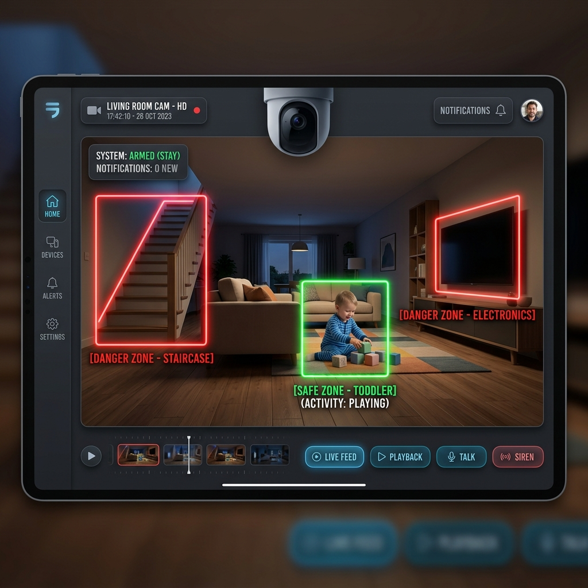

A quick glance at Leo's holistic development today.
Your child is developing well
Gait normal ✅
Approaching daily limit ⚠️
Kitchen door flagged 🔴
Longitudinal tracking of measurements & WHO Z-scores.
Visual deficiency screening and dietary tracking.
Target: ≥ 5 out of 8 food groups daily
Timeline of motor, social, and cognitive achievements.
Percentage of time in emotion states over past 8 weeks
AI boundary detection, object interaction, and incident history.


Child was within 1 meter of the kitchen boundary polygon.
Child faced active screen for 45+ minutes continuously.
Sudden torso angle change detected during play. Normal recovery observed.